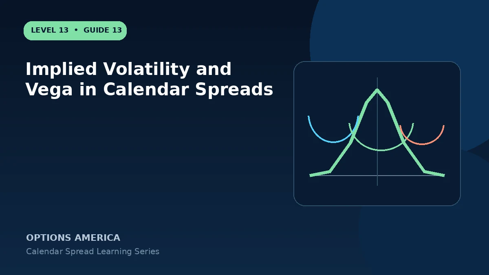

Understand volatility term structure, front-versus-back IV, event premium and the calendar's typically positive vega exposure.
Positive net vega
The later option commonly has more vega than the near option, leaving positive net exposure. A broad IV rise can help, while back-month contraction can damage the position.
Term structure
Front and back expirations often trade at different IV levels and may move independently. A calendar can lose even during a broad IV rise if the short expiration rises much more than the long expiration.
Event placement
When earnings fall between expirations, the back option may contain event premium that the front option does not. After the event moves into or out of a maturity, the structure can reprice abruptly.
Surface scenarios
Model separate changes for front IV and back IV at several stock prices. A parallel shift is only one scenario and can hide term-structure and skew risk.
A practical example
Front IV rises from 25% to 32% while back IV moves from 27% to 29%. Despite positive net vega, the short option's relative expansion may hurt the calendar.
This simplified example uses selected price, time and volatility assumptions; live results will differ. Live option prices also reflect the underlying price, time decay, rates, dividends, liquidity and transaction costs. Greeks are theoretical estimates, not guarantees.
Frequently asked questions
Does higher IV always help?
No. Relative expiration changes matter.
What is term structure?
The pattern of IV across expiration dates.
Why can earnings help or hurt?
Event premium may be concentrated in only one leg.
Continue the Calendar Spreads cluster
Explore related guides: How to Adjust a Calendar Spread · How to Build a Calendar Spread · Call Calendar vs Put Calendar Spread. For a structured sequence, use the free Level 13 – Calendar Spreads course.
Options involve risk and are not suitable for every investor. This material is educational and is not investment, tax or legal advice. Greeks are theoretical estimates, and contract terms and broker requirements can vary.